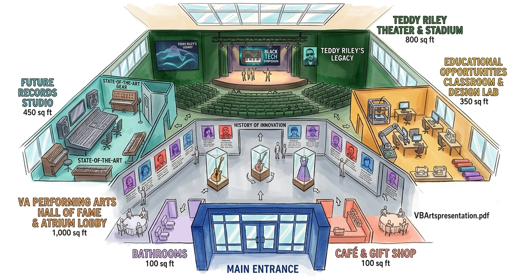
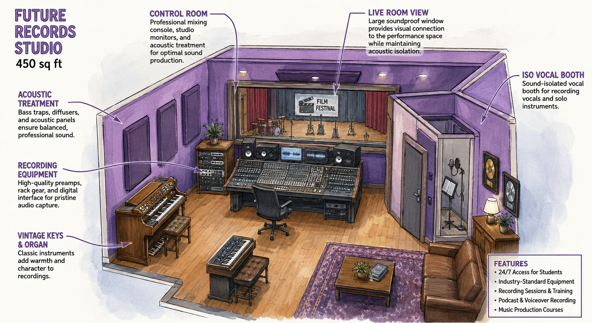
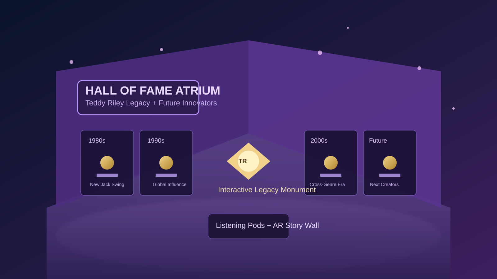

Performance Core
The Teddy Riley Theater and Stadium acts as a showcase arena where students perform original work, host music-tech showcases, and build stage confidence.
Teddy Riley Tribute Concept
TR Future Studios is imagined as a living ecosystem where Teddy Riley's impact is not only remembered, but actively taught through recording, performance, storytelling, and design lab experimentation.

This tribute translates legacy into opportunity: a theater and stadium stage for live experiences, a future records studio for modern production, a hall of fame atrium for cultural memory, and a classroom design lab where talent learns by building.

This new studio rendering adds technical depth to the tribute concept with clear production zones for tracking, mixing, and artist development.

The Hall of Fame atrium captures the tribute's memory layer: a place where young creators can walk through timeline walls, explore milestone records, and connect Teddy Riley's innovations to today's evolving sound.
The Teddy Riley Theater and Stadium acts as a showcase arena where students perform original work, host music-tech showcases, and build stage confidence.
The Future Records Studio gives artists hands-on access to professional-grade workflows, from arrangement and synthesis to mixing and final release strategy.
The history of innovation gallery links each generation of creators, showing how sound design, style, and technology evolve together.
Classroom and design lab spaces support maker culture, collaborative projects, and portfolio-driven learning for future artists and musicians.
Teddy Riley helped redefine genre boundaries. This concept ensures future creators can study that innovation, practice it, and push it forward in their own voice.
See Rendition 2